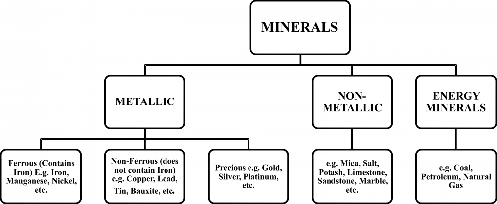

20 Mineral Resources In India Metallic
Introduction:
Minerals are natural substances with definite chemical and physical properties, formed through geological processes over millions of years. They serve as essential raw materials in various sectors, including construction, manufacturing, technology, and agriculture, making them crucial for economic development and everyday life. India, endowed with diverse geological structures, has a rich variety of mineral resources, particularly within its peninsular plateau.
A mineral is defined as a natural substance of organic or inorganic origin, characterized by a specific chemical composition and crystal structure. Minerals are broadly classified based on their properties into two main types:
Metallic Minerals: These are minerals from which metals can be extracted. They are further divided into:
Ferrous Minerals: Containing iron, such as iron ore and manganese. Non-Ferrous Minerals: Lacking iron content, including copper, bauxite, and lead. Non-Metallic Minerals: These include minerals not used for metal extraction, often used in industries like construction, agriculture, and energy. Examples are limestone, mica, and gypsum.

Characteristics of Mineral Resources
Minerals are characterized by the following features:
Uneven Distribution: Minerals are distributed unevenly across different regions. Finite Nature: Minerals are exhaustible, as they require significant geological time to form and cannot be replenished once extracted. Economic Importance: Minerals form the base for several industries and are crucial for economic stability and growth.
Minerals generally occur in these forms-
● Veins and Lodes in Igneous and Metamorphic Rocks
Minerals often form in cracks and joints in igneous and metamorphic rocks. Veins are smaller deposits, while lodes are larger. Metallic minerals like tin, copper, zinc, and lead are commonly found in these formations.
● Stratified Layers in Sedimentary Rocks
Minerals like coal and iron ore are found in beds or layers within sedimentary rocks, formed by deposition. Other minerals, such as gypsum and potash, come from evaporation in arid areas.
● Residual Deposits from Rock Decomposition
Through weathering, rocks decompose and leave behind ore-rich residues. Bauxite is a typical example formed by this process.
● Placer Deposits in Valley and River Sands
Found in riverbeds, placer deposits contain water-resistant minerals like gold, silver, tin, and platinum.
● Marine and Oceanic Deposits
Ocean waters provide minerals like salt, magnesium, and bromine, while manganese nodules are common on ocean floors.
Distribution of Minerals in India
● The North-Eastern Plateau Region
This region includes Chhotanagpur in Jharkhand, the Odisha Plateau, West Bengal, and parts of Chhattisgarh. It is known for its variety of minerals.
Rich in iron ore, coal, manganese, bauxite, and mica.
● The South-Western Plateau Region
This area covers Karnataka, Goa, and the uplands of Tamil Nadu and Kerala. It is notable for deposits of ferrous metals and bauxite.
Key minerals include high-grade iron ore, manganese, limestone, and bauxite. Kerala also has monazite and thorium deposits, while iron ore is found in Goa.
● The North-Western Region
Extending along the Aravalli Range in Rajasthan and parts of Gujarat, this belt is primarily associated with the Dharwar rock system.
Rich in copper and zinc, and also has deposits of sandstone, granite, marble, gypsum, Fuller’s earth, dolomite, and limestone. Gujarat is known for its petroleum deposits and salt resources.
● The Himalayan Belt
Spanning both eastern and western parts, this belt includes minerals found in mountainous terrain.
Important minerals include copper, lead, zinc, cobalt, and tungsten. The Assam Valley also holds significant mineral oil reserves.
Major Metallic Minerals
1. Iron Ore -
Iron ore is a fundamental raw material for the steel industry, serving as the backbone of modern infrastructure and industrial development.
Type of Mineral: Metallic (Ferrous) Primary Use: Essential for steel production, which is integral to construction, transportation, and manufacturing sectors.
Major States:
1. Odisha: Leading producer with significant high-grade hematite reserves.
2. Chhattisgarh: Notable for extensive mining activities, especially in the Bailadila range.
3. Karnataka: Houses major mining belts like Ballari and Chitradurga.
4. Jharkhand: Rich in iron ore deposits, particularly in the Singhbhum district.
5. Maharashtra: Contains important mining areas contributing to national production.
Main Mines or Locations:
Barabil–Koira Valley (Odisha): Renowned for substantial iron ore mining operations. Bailadila Mines (Chhattisgarh): Known for high-grade iron ore, crucial for steel manufacturing.
Dalli-Rajhara Mines (Chhattisgarh): One of India's largest mechanized mines, supplying raw material to steel plants.
Physical Characteristics:
| Type of Iron Ore | Iron Content (%) | Characteristics |
|---|---|---|
| Hematite | ~70 | Most preferred for steelmaking due to high iron content |
| Magnetite | 60-70 | Known for magnetic properties; valuable for iron extraction |
| Limonite | 40-60 | Considered lower-grade; used when high-grade ores are less available |
| Siderite | <40 | Contains signifciant impurities, making it less economically viable |
Economic Importance: Iron ore mining significantly contributes to India's economy by providing raw materials for steel production, supporting infrastructure development, and generating employment opportunities in mining regions.
2. Manganese
Type of Mineral: Metallic (Ferrous) Primary Use: Vital for steel production as it acts as a deoxidizer and helps in removing impurities. Additionally, it is used in the manufacturing of alloys, batteries, chemicals, and fertilizers.
Major States:
Odisha: Leading producer with rich deposits in areas like Gondite and Khondolite regions.
Karnataka: Notable for quality manganese reserves, contributing significantly to the national output.
Madhya Pradesh: A key manganese producer, with established mining zones. Maharashtra: Houses significant reserves, especially in the Nagpur-Bhandara region. Andhra Pradesh: Emergent player in manganese production. Main Mines or Locations:
Nagpur-Bhandara Region (Maharashtra): Known for substantial reserves and mining activities.
Gondite Mines (Odisha): Major source of high-quality manganese. Khondolite Deposits (Odisha): Another primary manganese-rich zone in the state. Physical Characteristics:
High-Grade Manganese Ore: Contains 35-46% manganese, suitable for various industrial applications, particularly in alloy production.
Medium-Grade Manganese Ore: Generally contains 25-35% manganese, used in chemical industries and fertilizers.
Economic Importance: Manganese mining is crucial for India’s economy, as it supports the steel and alloy industries. It also generates employment, contributes to export revenues, and supports the growth of related industries.
3. Chromite
Type of Mineral: Metallic (Ferrous) Primary Use: Essential for the production of stainless steel, ferrochrome alloys, and refractory materials. Chromite is a critical raw material in the metallurgical, chemical, and refractory industries.
Major States:
Odisha: Dominates chromite production with extensive reserves, especially in the Sukinda Valley.
Karnataka: Notable for its chromite deposits and substantial contribution to national output.
Andhra Pradesh: Emerges as a significant chromite-producing state with strategic reserves.
Maharashtra: Contains important deposits that add to India's chromite production. Tamil Nadu: Holds some chromite resources that supplement the country’s supply. Main Mines or Locations:
Sukinda Valley (Odisha): India’s primary chromite mining area, known for high-grade deposits.
Hassan Region (Karnataka): Important mining region for chromite, contributing to the alloy industry.
Guntur Region (Andhra Pradesh): Known for chromite reserves supporting local industry.
Physical Characteristics:
High-Grade Chromite Ore: Typically contains 40-50% chromium oxide (Cr₂O₃), making it highly desirable for industrial use.
Low-Grade Chromite Ore: Contains less than 40% chromium oxide and is used in refractory applications.
Economic Importance: Chromite mining is vital to India's stainless steel and ferrochrome industries, supporting infrastructure, manufacturing, and export activities. It is also crucial for India’s export revenue and offers significant employment opportunities in mining regions.
4. Nickel
Type of Mineral: Metallic (Ferrous) Primary Use: Nickel is crucial in the production of stainless steel and alloys, adding strength and resistance to corrosion. It is also a key material in battery manufacturing, particularly for electric vehicles, and is essential in various chemical applications.
Major States:
Odisha: The leading state in nickel production, with substantial reserves, particularly in the Jajpur district.
Jharkhand: Known for its nickel deposits, especially in the Singhbhum region. Nagaland: Contains nickel occurrences, though to a lesser extent than Odisha and Jharkhand.
Karnataka and Rajasthan: Have minor reserves, contributing to the national production of nickel.
Main Mines or Locations:
Sukinda Valley (Odisha): The primary source of nickeliferous limonite, making Odisha the most significant contributor to India's nickel output.
Singhbhum Region (Jharkhand): Known for nickel sulfide deposits, primarily found alongside copper ores.
Physical Characteristics:
Nickeliferous Limonite: Found in the lateritic soils of Sukinda Valley, containing a moderate percentage of nickel, often associated with iron oxides.
Nickel Sulfide Deposits: Primarily located in Jharkhand, with lower-grade nickel content but essential for various metallurgical processes.
Economic Importance: Nickel plays a vital role in the production of stainless steel and is increasingly valuable in battery technology, especially with the global rise of electric vehicles. Nickel mining also supports the local economies in Odisha and Jharkhand, contributing to industrial growth and job creation in these regions.
5. Bauxite
Type of Mineral: Metallic (Non-Ferrous) Primary Use: Bauxite is the chief source of aluminum, a lightweight and durable metal extensively used in the transportation, packaging, construction, and electrical industries.
Major States:
Odisha: The largest bauxite-producing state in India, with major deposits in the Koraput district.
Gujarat: Known for substantial bauxite reserves, particularly in areas like Junagarh. Jharkhand: Rich in deposits, particularly in areas like Gumla and Lohardaga. Madhya Pradesh: Contains significant reserves and contributes actively to India’s bauxite production.
Chhattisgarh and Maharashtra: Other notable producers with active mining sites. Main Mines or Locations:
Koraput (Odisha): Major mining district contributing significantly to India’s bauxite production.
Junagarh (Gujarat): Known for extensive bauxite reserves that support the state’s aluminum production.
Lohardaga (Jharkhand): Important bauxite mining center in the state, contributing to industrial requirements.
Physical Characteristics:
Gibbsite: A major form of bauxite, with a high aluminum content, which is crucial for aluminum extraction.
Bohemite and Diaspore: Contain aluminum oxides but require more energy to extract aluminum compared to gibbsite.
Economic Importance: Bauxite mining is critical for India's aluminum industry, which has applications across multiple sectors, including transportation and infrastructure. The aluminum sector provides employment, boosts regional economies in mining areas, and contributes to India's industrial growth.
6. Copper
Type of Mineral: Metallic (Non-Ferrous) Primary Use: Essential for electrical wiring, electronics, and industrial machinery due to its excellent conductivity, ductility, and corrosion resistance. Copper is also used in construction, transportation, and telecommunication sectors.
Major States:
Madhya Pradesh: Largest producer of copper in India, with major mines in the Malanjkhand area.
Rajasthan: Holds substantial copper reserves, with Khetri being a key mining area. Jharkhand: Known for its reserves, especially in Singhbhum district. Andhra Pradesh and Gujarat: Other states contributing to India's copper production. Main Mines or Locations:
Malanjkhand (Madhya Pradesh): Largest copper mine in India, providing a major portion of the country's copper production.
Khetri Belt (Rajasthan): Known for extensive copper deposits and major mining operations.
Singhbhum (Jharkhand): Important source of copper ore, supporting regional industries.
Physical Characteristics:
Chalcopyrite: The primary copper-bearing mineral, with around 34.5% copper content. Malachite and Azurite: Secondary minerals with lower copper content but significant in specific deposits.
Economic Importance: Copper is vital for India’s electrical and manufacturing sectors, driving the growth of infrastructure, renewable energy, and telecommunications. The copper industry supports significant employment in mining regions and contributes to India's economic expansion by reducing dependency on copper imports.
7. Silver
Type of Mineral: Metallic (Non-Ferrous) Primary Use: Widely used in jewelry, electronics, medical equipment, and as a monetary metal. Silver's high conductivity makes it valuable in electrical and solar applications.
Major States:
Rajasthan: Leading producer with significant reserves in the Zawar mines. Karnataka: Notable production, particularly from mines associated with other metal deposits.
Jharkhand: Some silver production as a by-product in mining operations. Andhra Pradesh and Madhya Pradesh: Additional contributors to national output. Main Mines or Locations:
Zawar Mines (Rajasthan): Known for high-grade silver, often mined alongside lead and zinc.
Tundoo Mines (Jharkhand): Contributes to silver production, mainly as a by-product. Kolar Gold Fields (Karnataka): Historically produced silver as a secondary product in gold mining.
Physical Characteristics:
Argentite (Silver Sulfide): Primary silver ore with about 87% silver content. Native Silver: Occasionally found as pure silver, though it’s rare. Associated Ores: Often found with galena (lead ore), pyrite, and other sulfides, especially in polymetallic deposits.
Economic Importance: Silver is a strategic metal, contributing to India's jewelry industry, electronics, and the renewable energy sector. With the rise of solar technology and electronics, silver demand is expected to grow, making domestic production valuable to reduce reliance on imports and to support economic development.
8. Gold
Type of Mineral: Metallic (Non-Ferrous) Primary Use: Primarily used for jewelry, investments (as a monetary asset), and in electronic components due to its excellent conductivity and resistance to corrosion.
Major States:
Karnataka: Dominates gold production, with significant reserves in the Kolar and Hutti mines.
Andhra Pradesh: Contributes notably to national production, especially from the Ramagiri mines.
Jharkhand: Known for placer deposits, particularly in rivers. Bihar and Rajasthan: Additional reserves contributing to gold extraction. Main Mines or Locations:
Kolar Gold Fields (Karnataka): Historic site for gold mining in India, though production has reduced due to resource depletion.
Hutti Gold Fields (Karnataka): India’s major active gold mine, contributing a large share to national production.
Ramagiri Mines (Andhra Pradesh): A significant contributor in Andhra Pradesh. Placer Deposits: Found in river sands, especially in Subarnarekha (Jharkhand) and other minor deposits in Kerala.
Physical Characteristics:
Native Gold: Gold is mostly found in its natural metallic state, with high purity. Alluvial Gold (Placer Gold): Fine particles or nuggets found in river beds and sands, typically mined through placer mining.
Economic Importance: Gold is a vital economic asset, serving as a secure investment medium, contributing to foreign exchange reserves, and supporting the jewelry sector. India’s cultural and economic dependency on gold drives significant demand, impacting trade and influencing economic policies related to import and export. Gold mining supports local employment and offers export potential, although India relies heavily on imports to meet domestic demand.